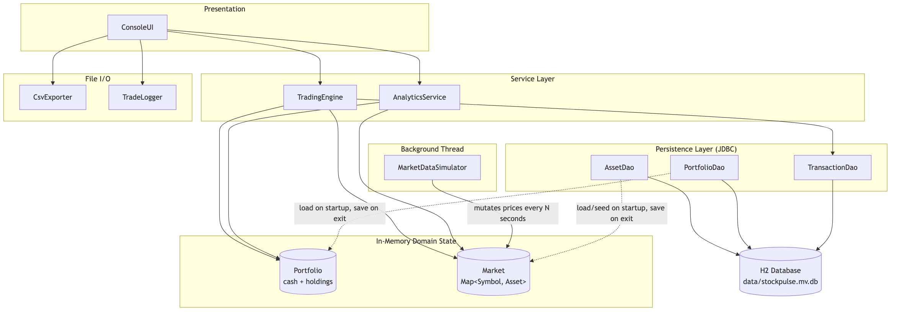
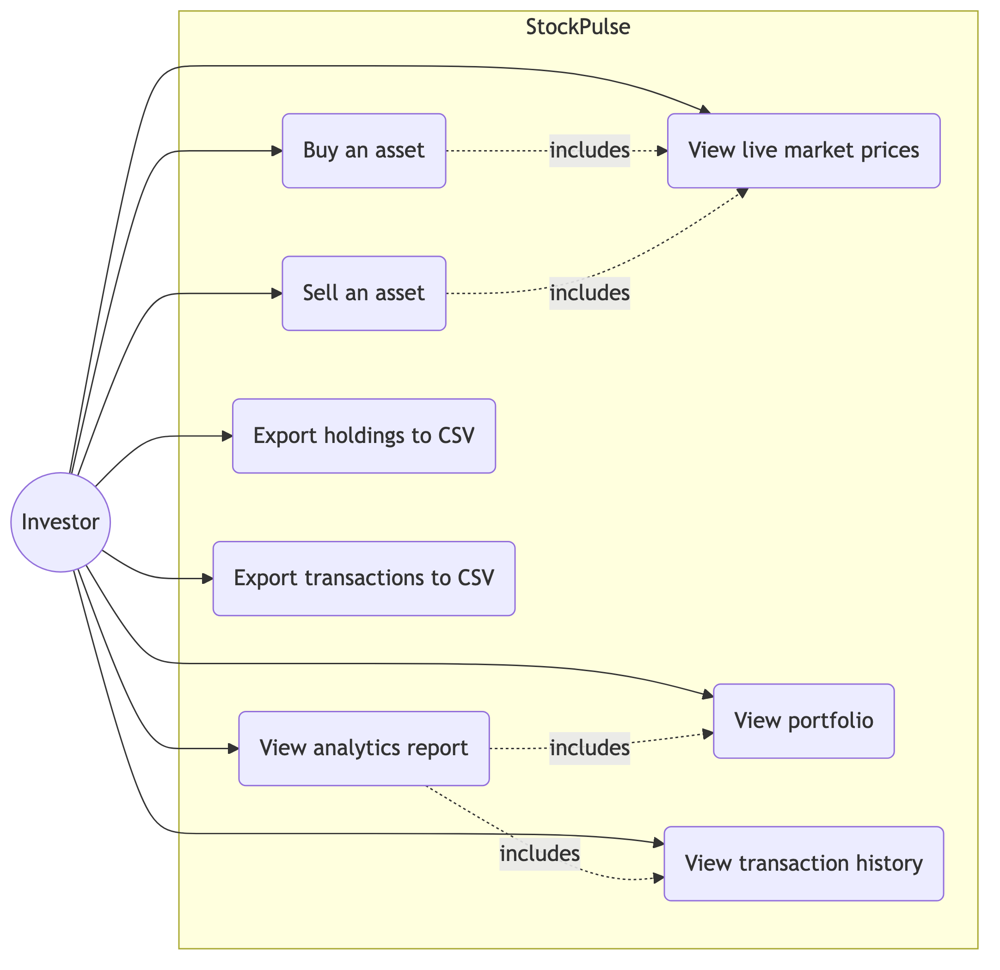
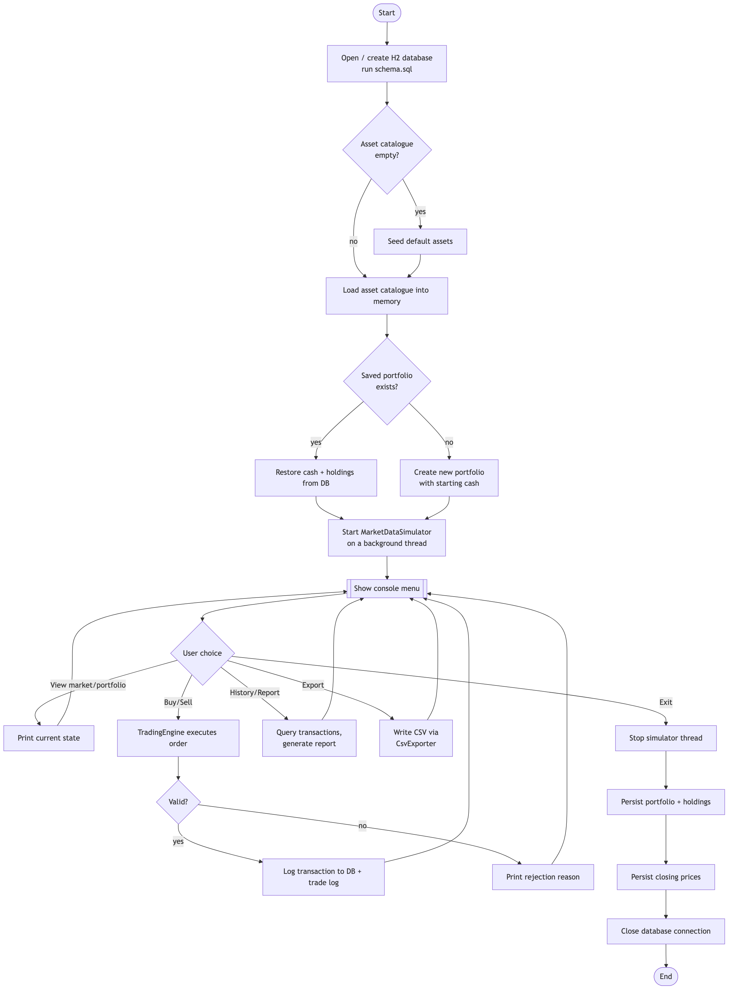
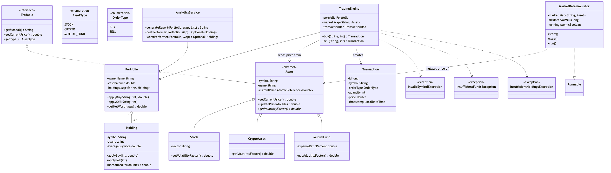
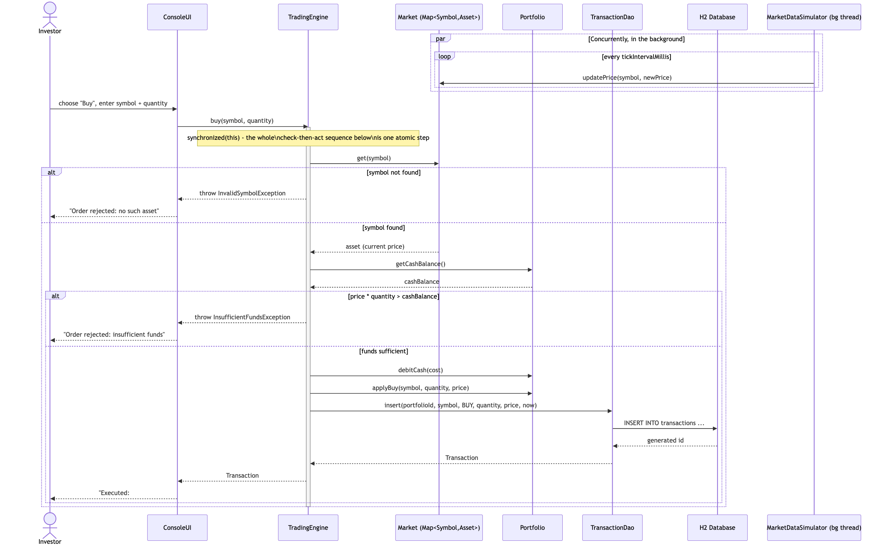
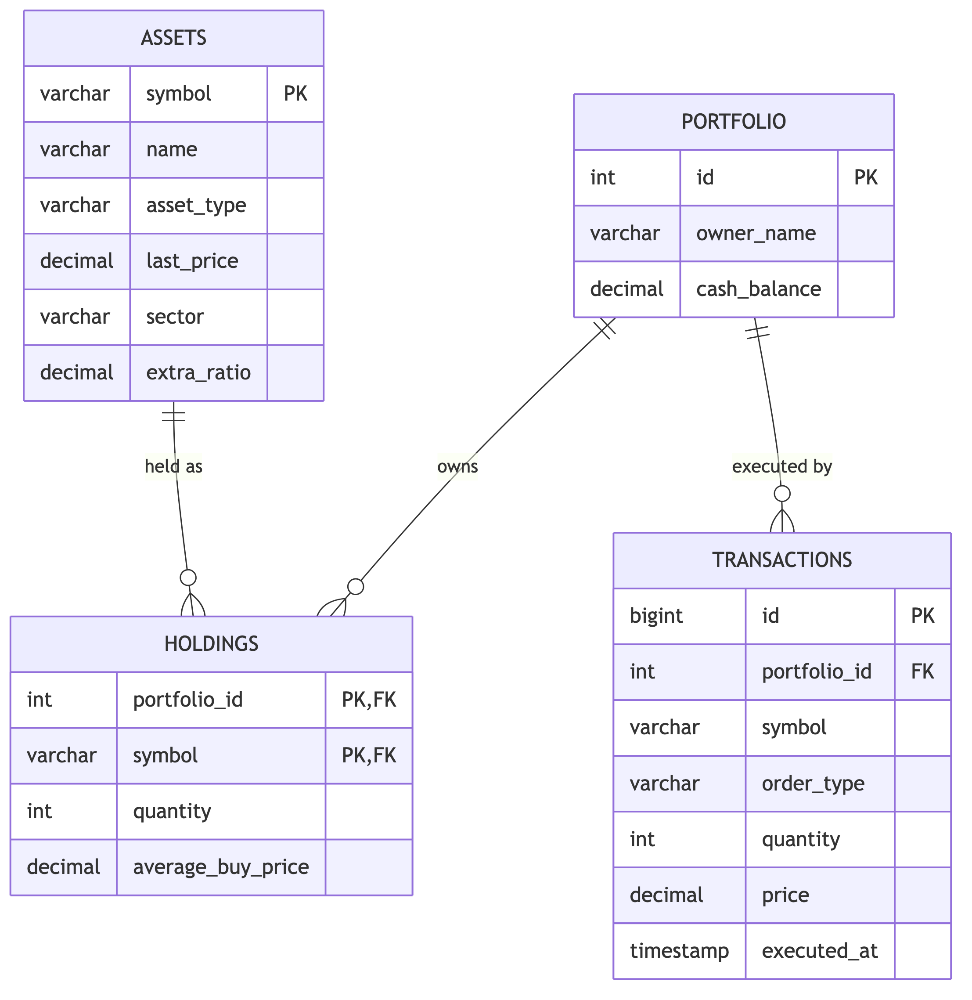

| Course | CSE2006 — Programming in Java |
| Assignment | VITyarthi — Build Your Own Project |
| Student | Aadarsh |
| Registration | 25BAI11087 |
| Institution | VIT Bhopal University |
| Date | September 2026 |
StockPulse is a console-based Java application built for the CSE2006 (Programming in Java) "Build Your Own Project" assignment. It simulates a single investor managing a multi-asset portfolio — stocks, cryptocurrencies, and mutual funds — against a market whose prices move continuously in the background while trades are placed.
The project was deliberately scoped to exercise, in one coherent domain, every unit of the CSE2006 syllabus: object-oriented design (Unit 2), exception handling and multithreading with real synchronization (Unit 3), the Collections framework and I/O streams (Unit 4), and JDBC-based persistence (Unit 5). Rather than bolting these on separately, each concept is load-bearing: the market simulator genuinely needs a background thread, the trading engine genuinely needs synchronization to avoid a race between a price update and an order, and the JDBC layer genuinely needs to survive an application restart.
Retail and student investors holding a small, mixed portfolio have no lightweight way to track holdings and profit/loss without spreadsheet arithmetic or a full brokerage account they don't need. Separately, most classroom demonstrations of Java concurrency use a toy counter, which does not show a student why synchronization matters — nothing visibly breaks if it's done wrong. StockPulse addresses both: it is a small, self-contained portfolio tracker, and its core trading loop is a scenario where an unsynchronized read of a live-changing price would produce an incorrect trade.
| In scope | Out of scope |
|---|---|
| Single-portfolio, single-user simulation; three asset types (stock, crypto, mutual fund); a simulated live price feed; a text console interface; JDBC persistence. | Graphical user interface; a real market-data API integration; multiple concurrent user portfolios. |
Students learning investment concepts who want a safe, zero-risk simulation, and anyone wanting a minimal, self-hosted way to track a small multi-asset portfolio.
The brief requires at least three major functional modules with a clear input/output structure and a logical user workflow. StockPulse implements exactly this as three modules:
| # | Module | Responsibility |
|---|---|---|
| 1 | Portfolio & Asset Management | Maintains the asset catalogue and the investor's cash + holdings; persists both via JDBC
(AssetDao, PortfolioDao). |
| 2 | Trading Engine | Validates and executes buy/sell orders against live prices; rejects invalid orders with a specific,
typed exception (TradingEngine). |
| 3 | Market Simulation & Analytics | Runs the background live-price thread and computes net worth, per-holding P&L, and best/worst
performer (MarketDataSimulator, AnalyticsService). |
Every module exposes a clear input (console menu choice + typed arguments) and output (console text, a persisted database row, or a CSV/log file), and the console menu enforces one logical workflow: view state → place an order → see the updated state or a rejection reason.
| Requirement | How it is addressed |
|---|---|
| Performance | Price reads/writes use a lock-free AtomicReference per asset instead of a
shared lock, so the simulator ticking every few seconds never blocks a trade and vice versa. |
| Reliability | Every buy/sell either fully applies (cash debited, holding updated, transaction logged) or fully fails with an exception — there is no code path that leaves the portfolio in a half-updated state. |
| Security | All SQL is parameterized through PreparedStatement; no string-concatenated
SQL exists anywhere in the DAO layer, eliminating SQL injection by construction. |
| Usability | A single numbered menu with consistent prompts; every rejected action prints a specific, actionable reason instead of a stack trace. |
| Maintainability | Strict package-by-responsibility layout (model, exception,
dao, service, market,
io, cli) so each concern can be read, tested, and
changed independently. |
| Logging / Auditability | Every executed trade is appended to both the transactions database table and
a plain-text data/trade_log.txt audit file. |
The application is layered so that the frequently-changing, in-memory market state stays off the database's hot path, while trades — infrequent but must never be lost — are written through immediately.






src/main/resources/schema.sql exactly.The brief asks for JDBC-based persistence but does not mandate a specific engine. An embedded, file-based H2
database was chosen over a networked server so the project can be cloned and run with mvn
clean package && java -jar target/stockpulse.jar alone — no separate database server to install,
configure, or have running for a grader to reproduce the build.
AtomicReferenceAn earlier draft stored each asset's price as a plain double field, synchronized
on the asset for both reads and writes. That would have meant every single console read of a price (the menu
prints market prices constantly) contends for the same lock the simulator thread acquires every tick. Since a
price is a single immutable value being replaced, not accumulated, AtomicReference<Double>
gives every reader a consistent, current value with no blocking and no torn reads — a deliberately narrower
guarantee than a full lock, chosen because it's exactly the guarantee this problem needs.
A trade is a multi-step sequence — read price, check funds/holdings, mutate the portfolio, log the
transaction — that must appear atomic even though the price itself may move again the instant after it's read.
TradingEngine.buy/sell are therefore
synchronized on the engine instance, so two orders can never interleave their
check-then-act steps, while the simulator remains completely free to keep mutating prices without ever touching
that lock.
Persisting every price change would make the database a bottleneck for what is otherwise a lock-free update and would generate an enormous, useless write volume. Prices are instead loaded once at startup and snapshotted once at a graceful shutdown; only trades, which are comparatively rare and must never be lost, are written immediately as they occur. See §5, Figure 1.
InvalidSymbolException, InsufficientFundsException,
and InsufficientHoldingsException are checked exceptions, not unchecked. A rejected
trade is an expected, routine outcome of user input (unlike a real bug), and making it checked forces every call
site — currently just ConsoleUI, but any future caller too — to explicitly decide how
to present the rejection rather than letting it silently propagate.
The codebase is organized into eight packages under com.stockpulse, totaling 19
source files plus 3 test classes (12 test methods):
| Package | Classes | Purpose |
|---|---|---|
model |
AssetType, OrderType, Tradable, Asset, Stock, CryptoAsset, MutualFund, Holding, Portfolio, Transaction | The OOP domain: an abstract Asset implementing Tradable,
specialized by three concrete asset types with different volatility bands, plus the portfolio/holding/
transaction value objects. |
exception |
InvalidSymbolException, InsufficientFundsException, InsufficientHoldingsException | Custom checked exceptions for every way an order can be rejected. |
db |
DatabaseManager | Owns the single JDBC connection and bootstraps the schema from schema.sql on
first run. |
dao |
AssetDao, PortfolioDao, TransactionDao | All SQL access, exclusively through PreparedStatement. |
market |
MarketDataSimulator | The background Runnable thread that drives price movement. |
service |
TradingEngine, AnalyticsService | Order execution and portfolio analytics — the two classes exercised most heavily by the test suite. |
io |
CsvExporter, TradeLogger | Character-stream file I/O (BufferedWriter/FileWriter),
independent of the JDBC layer. |
cli |
ConsoleUI | The Scanner-driven menu loop and the only class that talks to
System.in/out. |
| Syllabus Unit | Where in this project |
|---|---|
| Unit 1 — Flow control | Menu dispatch (switch expression in
ConsoleUI.run), loops throughout DAOs and the simulator. |
| Unit 2 — OOP | Abstract classes, interfaces, inheritance, polymorphism, and enums across the
model package. |
| Unit 3 — Exceptions & multithreading | Custom checked exceptions, multi-catch in
ConsoleUI; MarketDataSimulator as a dedicated
daemon thread; synchronized methods in TradingEngine. |
| Unit 4 — Collections & I/O streams | ConcurrentHashMap for
holdings/market, List for transaction history;
BufferedWriter/FileWriter in the
io package. |
| Unit 5 — JDBC | The entire db/dao
packages. |
As a console application, "screenshots" are captured here as literal terminal transcripts from a real run (reproduced verbatim, not re-typed), which is a more precise record than a screen image for a text interface.
$ java -jar target/stockpulse.jar
=================================================
StockPulse - Multi-threaded Portfolio Simulator
Prices update live in the background every few
seconds while you trade.
=================================================
1) View market 2) View portfolio 3) Buy 4) Sell
5) Transaction history 6) Analytics report
7) Export holdings CSV 8) Export transactions CSV 0) Exit
> 1
BTC Bitcoin 6182730.65 [CRYPTO]
ETH Ethereum 300491.79 [CRYPTO]
HDFC HDFC Bank Ltd 1663.36 [STOCK]
INFY Infosys Ltd 1508.78 [STOCK]
NIFB Nifty Bluechip Fund 250.48 [MUTUAL_FUND]
TATA Tata Motors Ltd 961.58 [STOCK]
> 3 Symbol: INFY Quantity: 20 Executed: #1 2026-09-05T23:48:30.348017 BUY INFY qty=20 price=1508.78 total=30175.60 > 3 Symbol: BTC Quantity: 1 Order rejected: Order requires 6182730.65 but only 69824.40 is available
The second order is rejected by a genuine InsufficientFundsException
thrown from TradingEngine.buy — not a hypothetical case, this is the actual exception
message produced by the running program.
> 4 Symbol: INFY Quantity: 5 Executed: #2 2026-09-05T23:48:30.350098 SELL INFY qty=5 price=1508.78 total=7543.90 > 5 #1 2026-09-05T23:48:30.348017 BUY INFY qty=20 price=1508.78 total=30175.60 #2 2026-09-05T23:48:30.350098 SELL INFY qty=5 price=1508.78 total=7543.90 > 6 ===== Portfolio Report: Aadarsh ===== Cash balance: 77368.30 Holdings value: 22631.70 Net worth: 100000.00 Total trades: 2 SYM QTY AVG COST PRICE P&L INFY 15 1508.78 1508.78 0.00 Best performer: INFY (0.00%) Worst performer: INFY (0.00%)
The suite uses JUnit 5 and runs via mvn test. 12 tests across 3 classes, all
passing:
| Test class | What it verifies |
|---|---|
PortfolioTest (4 tests) |
Weighted-average cost-basis math across repeated buys; a holding is fully removed once its quantity reaches zero; net worth correctly combines cash and marked-to-market holdings; unrealized P&L sign and magnitude. |
TradingEngineTest (6 tests) |
A valid buy debits cash and creates a holding; a buy that costs more than available cash throws
InsufficientFundsException; buying/selling an unknown symbol throws
InvalidSymbolException; selling more than is held throws
InsufficientHoldingsException; a sell after a buy correctly reduces the
holding and credits cash; every executed trade is actually persisted via
TransactionDao. |
MarketDataSimulatorTest (2 tests) |
A single tick never moves any asset's price beyond its own volatility band; the background thread starts and stops cleanly (a real concurrency smoke test — this exercises the actual worker thread, not a mocked one). |
TradingEngineTest runs against a fresh, isolated in-memory H2 database
(jdbc:h2:mem:<random-uuid>) created in @BeforeEach
and discarded in @AfterEach, so the test suite never touches, seeds, or corrupts the
real data/stockpulse.mv.db file used by the actual application.
The first working version registered a single Runtime.getRuntime().addShutdownHook(...)
to save the portfolio and close the database, and called System.exit(0) after the
menu loop exited normally. Manual end-to-end testing (not the unit tests, which are too narrow to catch this)
immediately produced:
Exception in thread "Thread-2" java.lang.IllegalStateException: Failed to save the portfolio Caused by: org.h2.jdbc.JdbcSQLNonTransientConnectionException: The database is open in exclusive mode; can not open additional connections
Root cause: the JVM runs all registered shutdown hooks concurrently, on separate
threads, with no ordering guarantee — H2 registers its own internal shutdown hook, and that hook was racing
against this project's save-and-close hook over the same connection. Calling System.exit
after an already-complete, ordinary program exit doesn't avoid this: shutdown hooks fire on any JVM
termination, not only an explicit exit call.
Fix: the save-and-close sequence is now invoked synchronously, directly on the main
thread immediately after the menu loop returns — before the JVM begins any shutdown sequence at all. The
registered shutdown hook still exists, but only as a fallback for an abrupt termination (Ctrl+C/kill), and an
AtomicBoolean guard ensures the save-and-close logic never runs twice. See
Main.java for the guarded shutdownOnce runnable.
An early version applied the same percentage swing to every asset, which made the "best/worst performer" analytics feature meaningless — everything moved by roughly the same amount. Giving each asset type its own volatility band (mutual fund 0.5%, stock 2%, crypto 8% per tick) was a small change that made the simulation behave recognizably like the real domain it models, and gave the analytics module something genuine to report on.
AtomicReference is often a better fit than synchronized
for a single, frequently-read, infrequently-replaced value — it was the difference between the simulator and the
console contending for a lock on every price read versus never contending at all.MarketDataSimulator.Tradable interface, so no other layer would need to change.synchronized design was deliberately kept
simple for one portfolio, and would need a per-portfolio lock strategy to extend safely.java.util.concurrent,
java.sql, and java.io package specifications.